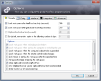

Installation
by Administrator, Usage by User
Installation
by Administrator, Usage by UserConfigurationDetails about how and where KeePass stores its configuration. |
KeePass supports multiple locations for storing configuration information: the global configuration file in the KeePass application directory, a local user-dependent one in the user's private configuration folder, and an enforced configuration file in the KeePass application directory. The first one is called global, because everyone using this KeePass installation will write to the same configuration file (and possibly overwriting settings of other users). The second one is called local, because changes made to this configuration file only affect the current user.
Configuration files are stored in XML format.| Configuration | Location | Typical File Path |
|---|---|---|
| Global | Application Directory | C:\Program Files (x86)\KeePass Password Safe 2\KeePass.config.xml |
| Global (Virtualized) | Windows Vista/7/8 Virtual Store | C:\Users\User Name\AppData\Local\VirtualStore\Program Files (x86)\KeePass Password Safe 2\KeePass.config.xml |
| Local | User Application Data | C:\Users\User Name\AppData\Roaming\KeePass\KeePass.config.xml |
| Enforced | Application Directory | C:\Program Files (x86)\KeePass Password Safe 2\KeePass.config.enforced.xml |
On 32-bit systems, the name of the program files folder is 'Program Files' instead of 'Program Files (x86)'.
Installation
by Administrator, Usage by UserIf you use the KeePass installer and install the program with administrator rights, the program directory will be write-protected when working as a normal/limited user. KeePass will use local configuration files, i.e. save and load the configuration from a file in your user directory.
Multiple users can use the locally installed KeePass. Configuration settings will not be shared and can be configured individually by each user.
 Portable
Version
Portable
VersionIf you downloaded the portable version of KeePass (ZIP package), KeePass will try to store its configuration in the application directory. No configuration settings will be stored in the user directory (if the global configuration file is writable).
Create
Portable Version of Installed KeePassIf you are currently using a locally installed version of KeePass (installed by the KeePass installer) and want to create a portable version of it, first copy all files of KeePass to the portable device. Then get the configuration file from your user directory (application data, see above) and copy it over the configuration file on the portable device.
 For
Network Administrators: Enforced Configuration
For
Network Administrators: Enforced ConfigurationKeePass can be forced to load specific configuration settings. Enforced configuration
settings are loaded from
KeePass.enforced.ini (KeePass 1.x) and KeePass.config.enforced.xml
(KeePass 2.x) files in the application directory (where KeePass.exe is
stored).
Configuration items that are not present in the enforced configuration file are loaded normally from global/local configuration files.
Example (2.x).
The following KeePass.config.enforced.xml file enforces the
values/states of the settings 'Clipboard auto-clear time (seconds)',
'Lock workspace when minimizing main window' and
'Lock workspace when locking the computer or switching the user'.
All other settings can be configured by the user.
<?xml version="1.0" encoding="utf-8"?> <Configuration xmlns:xsi="http://www.w3.org/2001/XMLSchema-instance" xmlns:xsd="http://www.w3.org/2001/XMLSchema"> <Security> <WorkspaceLocking> <LockOnWindowMinimize>true</LockOnWindowMinimize> <LockOnSessionSwitch>true</LockOnSessionSwitch> </WorkspaceLocking> <ClipboardClearAfterSeconds>20</ClipboardClearAfterSeconds> </Security> </Configuration> |
 |
UI disabled. KeePass 2.x disables most user interface items that are enforced. This can be seen in the screenshot for the example above: the enforced settings are drawn using gray text and clicking on them has no effect.
Security. Users must not have write access to the enforced configuration file (otherwise they could modify it, e.g. using a text editor).
Furthermore, this method only is effective as long as your users run the KeePass installation on the network drive. If they copy KeePass to their hard drives and run it from there, the options you set are not enforced (the local KeePass installation doesn't know anything of the enforced configuration file on the network drive in this case).
All data nodes (leaf nodes) are optional, however preceding non-leaf nodes with the same tag name in parent nodes of data leafs that you want to enforce are mandatory. For example, to enforce hiding user names and passwords using asterisks by default, the enforced configuration file would look like the following:<?xml version="1.0" encoding="utf-8"?> <Configuration xmlns:xsi="http://www.w3.org/2001/XMLSchema-instance" xmlns:xsd="http://www.w3.org/2001/XMLSchema"> <MainWindow> <EntryListColumnCollection> <Column /> <Column> <Type>UserName</Type> <HideWithAsterisks>true</HideWithAsterisks> </Column> <Column> <Type>Password</Type> <HideWithAsterisks>true</HideWithAsterisks> </Column> </EntryListColumnCollection> </MainWindow> </Configuration>In this example, the empty
<Column /> non-leaf node
(representing the title field)
has the same tag name as the following sibling nodes ("Column"),
and therefore is required.
 Technical
Details
Technical
DetailsThis section explains in detail how loading and saving the configuration works.
When KeePass starts up and finds both global and local configuration files, it must
decide the order in which KeePass tries to get the configuration items.
This is controlled by the
(Kee)PreferUserConfiguration flag in the global configuration
file. If it is not present, it defaults to false.
The flag is set to true in the global configuration file of the KeePass installer package. The portable ZIP package does not contain a configuration file, consequently the flag defaults to false.
Loading:PreferUserConfiguration flag is true, use the item from
the local configuration file, otherwise use the one of the global one.
If the global one doesn't exist or doesn't contain this item, use the default value.PreferUserConfiguration flag is true, try to store
all configuration items into the local configuration file.
If this fails, try to store them into the global configuration file.
If this fails, report error.PreferUserConfiguration flag is false, try to store
all items into the global configuration file.
If this fails try to store them into the local configuration file.
If this fails, report error.-cfg-local:' command line parameter.
{kind=link}